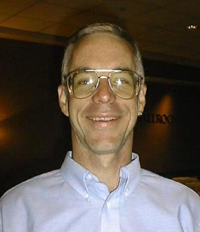
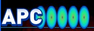
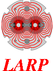
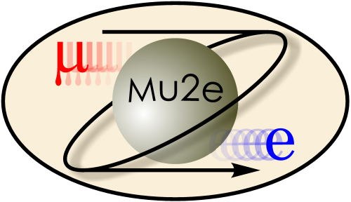
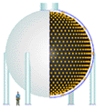

<!DOCTYPE HTML PUBLIC "-//W3C//DTD HTML 4.01 Transitional//EN">
<html xmlns:v="urn:schemas-microsoft-com:vml" xmlns:o="urn:schemas-microsoft-com:office:office" xmlns:w="urn:schemas-microsoft-com:office:word" xmlns:st1="urn:schemas-microsoft-com:office:smarttags" xmlns="http://www.w3.org/TR/REC-html40"><head>
<!-- saved from url=(0029)http://home.fnal.gov/~prebys/ -->


  <meta http-equiv="Content-Type" content="text/html; charset=ISO-8859-1">
  <meta name="ProgId" content="Word.Document">
  <meta name="Generator" content="Microsoft Word 11">
  <meta name="Originator" content="Microsoft Word 11">
  <link rel="File-List" href="http://home.fnal.gov/%7Eprebys/index_files/filelist.xml">
  <link rel="Edit-Time-Data" href="http://home.fnal.gov/%7Eprebys/index_files/editdata.mso"><!--[if !mso]>
<style>
v\:* {behavior:url(#default#VML);}
o\:* {behavior:url(#default#VML);}
w\:* {behavior:url(#default#VML);}
.shape {behavior:url(#default#VML);}
</style>
<![endif]--><title>Eric Prebys Web Page</title>

  
  <style>
<!--
 /* Font Definitions */
 @font-face
	{font-family:Wingdings;
	panose-1:5 0 0 0 0 0 0 0 0 0;
	mso-font-charset:2;
	mso-generic-font-family:auto;
	mso-font-pitch:variable;
	mso-font-signature:0 268435456 0 0 -2147483648 0;}
 /* Style Definitions */
 p.MsoNormal, li.MsoNormal, div.MsoNormal
	{mso-style-parent:"";
	margin:0in;
	margin-bottom:.0001pt;
	mso-pagination:widow-orphan;
	font-size:12.0pt;
	font-family:"Times New Roman";
	mso-fareast-font-family:"Times New Roman";
	color:black;}
h2
	{mso-margin-top-alt:auto;
	margin-right:0in;
	mso-margin-bottom-alt:auto;
	margin-left:0in;
	mso-pagination:widow-orphan;
	mso-outline-level:2;
	font-size:18.0pt;
	font-family:"Times New Roman";
	color:black;
	font-weight:bold;}
a:link, span.MsoHyperlink
	{color:#0000EE;
	text-decoration:underline;
	text-underline:single;}
a:visited, span.MsoHyperlinkFollowed
	{color:#551A8B;
	text-decoration:underline;
	text-underline:single;}
p
	{mso-margin-top-alt:auto;
	margin-right:0in;
	mso-margin-bottom-alt:auto;
	margin-left:0in;
	mso-pagination:widow-orphan;
	font-size:12.0pt;
	font-family:"Times New Roman";
	mso-fareast-font-family:"Times New Roman";
	color:black;}
@page Section1
	{size:8.5in 11.0in;
	margin:1.0in 1.25in 1.0in 1.25in;
	mso-header-margin:.5in;
	mso-footer-margin:.5in;
	mso-paper-source:0;}
div.Section1
	{page:Section1;}
 /* List Definitions */
 @list l0
	{mso-list-id:624312278;
	mso-list-template-ids:2123035412;}
@list l0:level1
	{mso-level-number-format:bullet;
	mso-level-text:\F0B7;
	mso-level-tab-stop:.5in;
	mso-level-number-position:left;
	text-indent:-.25in;
	mso-ansi-font-size:10.0pt;
	font-family:Symbol;}
@list l0:level2
	{mso-level-tab-stop:1.0in;
	mso-level-number-position:left;
	text-indent:-.25in;}
@list l0:level3
	{mso-level-tab-stop:1.5in;
	mso-level-number-position:left;
	text-indent:-.25in;}
@list l0:level4
	{mso-level-tab-stop:2.0in;
	mso-level-number-position:left;
	text-indent:-.25in;}
@list l0:level5
	{mso-level-tab-stop:2.5in;
	mso-level-number-position:left;
	text-indent:-.25in;}
@list l0:level6
	{mso-level-tab-stop:3.0in;
	mso-level-number-position:left;
	text-indent:-.25in;}
@list l0:level7
	{mso-level-tab-stop:3.5in;
	mso-level-number-position:left;
	text-indent:-.25in;}
@list l0:level8
	{mso-level-tab-stop:4.0in;
	mso-level-number-position:left;
	text-indent:-.25in;}
@list l0:level9
	{mso-level-tab-stop:4.5in;
	mso-level-number-position:left;
	text-indent:-.25in;}
@list l1
	{mso-list-id:801919552;
	mso-list-template-ids:1803824902;}
@list l1:level1
	{mso-level-number-format:bullet;
	mso-level-text:\F0B7;
	mso-level-tab-stop:.5in;
	mso-level-number-position:left;
	text-indent:-.25in;
	mso-ansi-font-size:10.0pt;
	font-family:Symbol;}
@list l1:level2
	{mso-level-tab-stop:1.0in;
	mso-level-number-position:left;
	text-indent:-.25in;}
@list l1:level3
	{mso-level-tab-stop:1.5in;
	mso-level-number-position:left;
	text-indent:-.25in;}
@list l1:level4
	{mso-level-tab-stop:2.0in;
	mso-level-number-position:left;
	text-indent:-.25in;}
@list l1:level5
	{mso-level-tab-stop:2.5in;
	mso-level-number-position:left;
	text-indent:-.25in;}
@list l1:level6
	{mso-level-tab-stop:3.0in;
	mso-level-number-position:left;
	text-indent:-.25in;}
@list l1:level7
	{mso-level-tab-stop:3.5in;
	mso-level-number-position:left;
	text-indent:-.25in;}
@list l1:level8
	{mso-level-tab-stop:4.0in;
	mso-level-number-position:left;
	text-indent:-.25in;}
@list l1:level9
	{mso-level-tab-stop:4.5in;
	mso-level-number-position:left;
	text-indent:-.25in;}
@list l2
	{mso-list-id:1310211582;
	mso-list-template-ids:-88055230;}
@list l2:level1
	{mso-level-number-format:bullet;
	mso-level-text:\F0B7;
	mso-level-tab-stop:.5in;
	mso-level-number-position:left;
	text-indent:-.25in;
	mso-ansi-font-size:10.0pt;
	font-family:Symbol;}
@list l2:level2
	{mso-level-number-format:bullet;
	mso-level-text:o;
	mso-level-tab-stop:1.0in;
	mso-level-number-position:left;
	text-indent:-.25in;
	mso-ansi-font-size:10.0pt;
	font-family:"Courier New";
	mso-bidi-font-family:"Times New Roman";}
@list l2:level3
	{mso-level-number-format:bullet;
	mso-level-text:\F0A7;
	mso-level-tab-stop:1.5in;
	mso-level-number-position:left;
	text-indent:-.25in;
	mso-ansi-font-size:10.0pt;
	font-family:Wingdings;}
@list l2:level4
	{mso-level-tab-stop:2.0in;
	mso-level-number-position:left;
	text-indent:-.25in;}
@list l2:level5
	{mso-level-tab-stop:2.5in;
	mso-level-number-position:left;
	text-indent:-.25in;}
@list l2:level6
	{mso-level-tab-stop:3.0in;
	mso-level-number-position:left;
	text-indent:-.25in;}
@list l2:level7
	{mso-level-tab-stop:3.5in;
	mso-level-number-position:left;
	text-indent:-.25in;}
@list l2:level8
	{mso-level-tab-stop:4.0in;
	mso-level-number-position:left;
	text-indent:-.25in;}
@list l2:level9
	{mso-level-tab-stop:4.5in;
	mso-level-number-position:left;
	text-indent:-.25in;}
@list l3
	{mso-list-id:1557859086;
	mso-list-template-ids:-2076649928;}
@list l3:level1
	{mso-level-number-format:bullet;
	mso-level-text:\F0B7;
	mso-level-tab-stop:.5in;
	mso-level-number-position:left;
	text-indent:-.25in;
	mso-ansi-font-size:10.0pt;
	font-family:Symbol;}
@list l3:level2
	{mso-level-tab-stop:1.0in;
	mso-level-number-position:left;
	text-indent:-.25in;}
@list l3:level3
	{mso-level-tab-stop:1.5in;
	mso-level-number-position:left;
	text-indent:-.25in;}
@list l3:level4
	{mso-level-tab-stop:2.0in;
	mso-level-number-position:left;
	text-indent:-.25in;}
@list l3:level5
	{mso-level-tab-stop:2.5in;
	mso-level-number-position:left;
	text-indent:-.25in;}
@list l3:level6
	{mso-level-tab-stop:3.0in;
	mso-level-number-position:left;
	text-indent:-.25in;}
@list l3:level7
	{mso-level-tab-stop:3.5in;
	mso-level-number-position:left;
	text-indent:-.25in;}
@list l3:level8
	{mso-level-tab-stop:4.0in;
	mso-level-number-position:left;
	text-indent:-.25in;}
@list l3:level9
	{mso-level-tab-stop:4.5in;
	mso-level-number-position:left;
	text-indent:-.25in;}
@list l4
	{mso-list-id:1631983840;
	mso-list-template-ids:-7276970;}
@list l4:level1
	{mso-level-number-format:bullet;
	mso-level-text:\F0B7;
	mso-level-tab-stop:.5in;
	mso-level-number-position:left;
	text-indent:-.25in;
	mso-ansi-font-size:10.0pt;
	font-family:Symbol;}
@list l4:level2
	{mso-level-tab-stop:1.0in;
	mso-level-number-position:left;
	text-indent:-.25in;}
@list l4:level3
	{mso-level-tab-stop:1.5in;
	mso-level-number-position:left;
	text-indent:-.25in;}
@list l4:level4
	{mso-level-tab-stop:2.0in;
	mso-level-number-position:left;
	text-indent:-.25in;}
@list l4:level5
	{mso-level-tab-stop:2.5in;
	mso-level-number-position:left;
	text-indent:-.25in;}
@list l4:level6
	{mso-level-tab-stop:3.0in;
	mso-level-number-position:left;
	text-indent:-.25in;}
@list l4:level7
	{mso-level-tab-stop:3.5in;
	mso-level-number-position:left;
	text-indent:-.25in;}
@list l4:level8
	{mso-level-tab-stop:4.0in;
	mso-level-number-position:left;
	text-indent:-.25in;}
@list l4:level9
	{mso-level-tab-stop:4.5in;
	mso-level-number-position:left;
	text-indent:-.25in;}
@list l5
	{mso-list-id:1652707277;
	mso-list-template-ids:-2017527536;}
@list l5:level1
	{mso-level-number-format:bullet;
	mso-level-text:\F0B7;
	mso-level-tab-stop:.5in;
	mso-level-number-position:left;
	text-indent:-.25in;
	mso-ansi-font-size:10.0pt;
	font-family:Symbol;}
@list l5:level2
	{mso-level-tab-stop:1.0in;
	mso-level-number-position:left;
	text-indent:-.25in;}
@list l5:level3
	{mso-level-tab-stop:1.5in;
	mso-level-number-position:left;
	text-indent:-.25in;}
@list l5:level4
	{mso-level-tab-stop:2.0in;
	mso-level-number-position:left;
	text-indent:-.25in;}
@list l5:level5
	{mso-level-tab-stop:2.5in;
	mso-level-number-position:left;
	text-indent:-.25in;}
@list l5:level6
	{mso-level-tab-stop:3.0in;
	mso-level-number-position:left;
	text-indent:-.25in;}
@list l5:level7
	{mso-level-tab-stop:3.5in;
	mso-level-number-position:left;
	text-indent:-.25in;}
@list l5:level8
	{mso-level-tab-stop:4.0in;
	mso-level-number-position:left;
	text-indent:-.25in;}
@list l5:level9
	{mso-level-tab-stop:4.5in;
	mso-level-number-position:left;
	text-indent:-.25in;}
@list l6
	{mso-list-id:1672024181;
	mso-list-template-ids:842299102;}
@list l6:level1
	{mso-level-number-format:bullet;
	mso-level-text:\F0B7;
	mso-level-tab-stop:.5in;
	mso-level-number-position:left;
	text-indent:-.25in;
	mso-ansi-font-size:10.0pt;
	font-family:Symbol;}
@list l6:level2
	{mso-level-tab-stop:1.0in;
	mso-level-number-position:left;
	text-indent:-.25in;}
@list l6:level3
	{mso-level-tab-stop:1.5in;
	mso-level-number-position:left;
	text-indent:-.25in;}
@list l6:level4
	{mso-level-tab-stop:2.0in;
	mso-level-number-position:left;
	text-indent:-.25in;}
@list l6:level5
	{mso-level-tab-stop:2.5in;
	mso-level-number-position:left;
	text-indent:-.25in;}
@list l6:level6
	{mso-level-tab-stop:3.0in;
	mso-level-number-position:left;
	text-indent:-.25in;}
@list l6:level7
	{mso-level-tab-stop:3.5in;
	mso-level-number-position:left;
	text-indent:-.25in;}
@list l6:level8
	{mso-level-tab-stop:4.0in;
	mso-level-number-position:left;
	text-indent:-.25in;}
@list l6:level9
	{mso-level-tab-stop:4.5in;
	mso-level-number-position:left;
	text-indent:-.25in;}
ol
	{margin-bottom:0in;}
ul
	{margin-bottom:0in;}
-->
  </style></head><body alink="#ff0000" bgcolor="white" lang="EN-US" link="#0000ee" vlink="#551a8b">
<o:smarttagtype namespaceuri="urn:schemas-microsoft-com:office:smarttags" name="State"></o:smarttagtype>
<o:smarttagtype namespaceuri="urn:schemas-microsoft-com:office:smarttags" name="City"></o:smarttagtype><o:smarttagtype namespaceuri="urn:schemas-microsoft-com:office:smarttags" name="country-region"></o:smarttagtype> <o:smarttagtype namespaceuri="urn:schemas-microsoft-com:office:smarttags" name="place"></o:smarttagtype><!--[if gte mso 9]><xml>
 <o:DocumentProperties>
  <o:Author>Beams Division</o:Author>
  <o:LastAuthor>Beams Division</o:LastAuthor>
  <o:Revision>3</o:Revision>
  <o:TotalTime>2</o:TotalTime>
  <o:Created>2006-08-29T16:40:00Z</o:Created>
  <o:LastSaved>2006-08-29T16:40:00Z</o:LastSaved>
  <o:Pages>1</o:Pages>
  <o:Words>1563</o:Words>
  <o:Characters>8914</o:Characters>
  <o:Company>FermiLab</o:Company>
  <o:Lines>74</o:Lines>
  <o:Paragraphs>20</o:Paragraphs>
  <o:CharactersWithSpaces>10457</o:CharactersWithSpaces>
  <o:Version>11.8028</o:Version>
 </o:DocumentProperties>
</xml><![endif]--><!--[if gte mso 9]><xml>
 <w:WordDocument>
  <w:Zoom>75</w:Zoom>
  <w:ValidateAgainstSchemas/>
  <w:SaveIfXMLInvalid>false</w:SaveIfXMLInvalid>
  <w:IgnoreMixedContent>false</w:IgnoreMixedContent>
  <w:AlwaysShowPlaceholderText>false</w:AlwaysShowPlaceholderText>
  <w:BrowserLevel>MicrosoftInternetExplorer4</w:BrowserLevel>
 </w:WordDocument>
</xml><![endif]--><!--[if gte mso 9]><xml>
 <w:LatentStyles DefLockedState="false" LatentStyleCount="156">
 </w:LatentStyles>
</xml><![endif]--><!--[if !mso]><object
 classid="clsid:38481807-CA0E-42D2-BF39-B33AF135CC4D" id=ieooui></object>
<style>
st1\:*{behavior:url(#ieooui) }
</style>
<![endif]--><!--[if gte mso 10]>
<style>
 /* Style Definitions */
 table.MsoNormalTable
	{mso-style-name:"Table Normal";
	mso-tstyle-rowband-size:0;
	mso-tstyle-colband-size:0;
	mso-style-noshow:yes;
	mso-style-parent:"";
	mso-padding-alt:0in 5.4pt 0in 5.4pt;
	mso-para-margin:0in;
	mso-para-margin-bottom:.0001pt;
	mso-pagination:widow-orphan;
	font-size:10.0pt;
	font-family:"Times New Roman";
	mso-ansi-language:#0400;
	mso-fareast-language:#0400;
	mso-bidi-language:#0400;}
</style>
<![endif]--><!--[if gte mso 9]><xml>
 <o:shapedefaults v:ext="edit" spidmax="7170"/>
</xml><![endif]--><!--[if gte mso 9]><xml>
 <o:shapelayout v:ext="edit">
  <o:idmap v:ext="edit" data="1"/>
 </o:shapelayout></xml><![endif]-->
<div class="Section1">
<p class="MsoNormal">&nbsp; </p>
<p class="MsoNormal" style="text-align: center;" align="center"><o:p>&nbsp;</o:p></p>
<div align="center">
<table class="MsoNormalTable" style="border: 2.25pt outset ; width: 604px; height: 424px; text-align: left; margin-left: auto; margin-right: auto;" border="1" cellpadding="0" cellspacing="5">
  <tbody>
    <tr style="">
      <td style="padding: 3.75pt; width: 327px;">
      <p class="MsoNormal" style="text-align: center;" align="center"><span style="font-size: 36pt;">Eric Prebys</span></p>
      </td>
      <td colspan="1" rowspan="3" style="padding: 3.75pt; width: 242px;">
      <p class="MsoNormal" style="text-align: center;" align="center"><a href="http://home.fnal.gov/%7Eprebys/#general"><span style="text-decoration: none;"></span></a></p>
      </td>
    </tr>
    <tr style="">
      <td style="padding: 3.75pt; width: 327px;">
      <p class="MsoNormal" style="text-align: center;" align="center"><a href="http://www.fnal.gov/"><span style="text-decoration: none;"></span></a></p>
      </td>
    </tr>
    <tr style="">
      <td colspan="1" style="padding: 3.75pt; width: 242px; text-align: center;"><a href="http://apc.fnal.gov/"></a></td>
    </tr>
    <tr style="">
      <td colspan="1" style="padding: 3.75pt; width: 327px;">
      <p class="MsoNormal" style="text-align: center;" align="center"><a href="http://www-boone.fnal.gov/"><span style="text-decoration: none;"></span></a><a href="http://www.uslarp.org/"></a><br>
      </p>
      </td>
      <td style="text-align: center; width: 242px;"><a href="http://mu2e.fnal.gov/"></a></td>
    </tr>
  </tbody>
</table>
</div>
<p><i>(This page last updated 9-OCT-2015)</i> </p>
<h2><a name="general"></a>General</h2>
<blockquote style="margin-top: 5pt; margin-bottom: 5pt;">
  <p class="MsoNormal"><o:p>&nbsp;</o:p></p>
  <table class="MsoNormalTable" style="" border="0" cellpadding="0">
    <tbody>
      <tr style="">
        <td colspan="2" style="padding: 0.75pt;">
        
        <p class="MsoNormal">Scientist II<br>
        <a href="http://apc.fnal.gov/"><span style="text-decoration: underline;">Accelerator Physics Center (APC)</span></a>
Headquarters<br>
        <a href="http://www.fnal.gov/">Fermi National Accelerator
Laboratory (Fermilab)</a></p>

        <p class="MsoNormal"><o:p>&nbsp;</o:p></p>
        </td>
      </tr>
      <tr style="">
        <td style="padding: 0.75pt;">
        <p class="MsoNormal">Office:</p>
        </td>
        <td style="padding: 0.75pt;">
        <p class="MsoNormal"><span style="font-style: italic;"><span style="color: rgb(255, 0, 0);"></span></span>Wilson Hall 1334 (WH13SE)<span style="font-style: italic;">&nbsp;<span style="color: rgb(255, 0, 0);"></span></span></p>
        </td>
      </tr>
      <tr style="">
        <td style="padding: 0.75pt;">
        <p class="MsoNormal">Phone:</p>
        </td>
        <td style="padding: 0.75pt;">
        <p class="MsoNormal">630-840-8369&nbsp;&nbsp;&nbsp;</p>
        </td>
      </tr>
      <tr>
        <td>Cell:</td>
        <td>630-336-1893</td>
      </tr>
      
      <tr style="">
        <td style="padding: 0.75pt;">
        <p class="MsoNormal">Email:</p>
        </td>
        <td style="padding: 0.75pt;">
        <p class="MsoNormal"><a href="mailto:prebys@fnal.gov">prebys@fnal.gov</a></p>
        </td>
      </tr>
      <tr style="">
        <td style="padding: 0.75pt;" valign="top">
        <p class="MsoNormal">Address:</p>
        </td>
        <td style="padding: 0.75pt;">
        <p class="MsoNormal">MS221, Fermilab &nbsp; &nbsp; &nbsp;
&nbsp; &nbsp; &nbsp; &nbsp; &nbsp; &nbsp; &nbsp; &nbsp; &nbsp; &nbsp;
&nbsp; &nbsp; &nbsp; &nbsp; &nbsp; &nbsp; &nbsp; &nbsp; <br>
        <st1:street w:st="on">P.O. Box 500</st1:street>&nbsp; <br>
        <st1:city w:st="on">Batavia</st1:city>, <st1:state w:st="on">IL</st1:state>
        <st1:postalcode w:st="on">60510</st1:postalcode></p>
        </td>
      </tr>
    </tbody>
  </table>
</blockquote>
<ul>
  <li><a href="cv.pdf">Curriculum Vitae</a><br>
  </li>
</ul>
<h2>Current Responsibilities and Research
Activities:</h2>


<ul style="margin-top: 0in;" type="disc">
  <li class="MsoNormal" style="">Deputy Head, Fermilab Accelerator Physics Center (<a href="http://apc.fnal.gov/">APC</a>) <br>
</li>
  <li class="MsoNormal" style="">In charge of proton injection for <a href="https://cdcvs.fnal.gov/redmine/projects/iota/wiki/Wiki">IOTA</a> project.<br>
  </li>

  <li class="MsoNormal" style="">&nbsp; muon 2 electron
(<a href="http://mu2e.fnal.gov/">mu2e</a>) conversion experiment</li>
  <li class="MsoNormal" style="">Chair, <a href="http://pip3.fnal.gov/">Proton Improvement Plan III (PIP-III)</a> task force. <br>
  </li>


  <li class="MsoNormal" style=""><a href="http://www.uslarp.org/"></a><a href="http://www.uslarp.org/">LARP</a> R&amp;D Coordinator</li>

  

  <li class="MsoNormal"><a href="http://www.fnal.gov/orgs/fermilab_users_org/">Users' Executive Committee</a> - Member<br>
</li>
  <li class="MsoNormal" style=""><a href="http://www.illinoisacceleratorinstitute.org/">Lee Teng
Undergraduate Internship</a> - Program Director/Committee Chair</li>

  <li class="MsoNormal" style=""><a href="http://www.fnal.gov/pub/forphysicists/fellowships/leon_lederman/index.html">Fermilab Lederman Fellowship</a>, Selection Committee Member</li>

  <li class="MsoNormal" style="">Adjunct Professor of Physics, <a href="http://www.utexas.edu/">University of Texas, Austin</a></li>
</ul>
<h2>Previous Research Activities</h2>
<ul style="margin-top: 0in;" type="disc">
</ul>
<ul>
  <li><a href="http://www.uslarp.org/"></a><a href="http://www.uslarp.org/">LARP</a> Director</li>
  <li class="MsoNormal" style=""><a href="http://www.snowmass2013.org/tiki-index.php">Snowmass 2013 (SnowMiss)</a>, Technical adviser to <a href="http://www.snowmass2013.org/tiki-index.php?page=Energy+Frontier">Energy Frontier Group</a></li>

  <li><a href="http://apc.fnal.gov/programs2/joint_university.shtml">Joint
University - Fermilab Doctoral Program in Accelerator Physics and
Technology </a>- Committee Chair</li>

  <li><a href="http://www-accel-proj.fnal.gov/Proton_Plan/index.shtml">Proton
Plan</a> Project Manager</li>
</ul>
<ul>
  <li>&nbsp; <a href="http://www-boone.fnal.gov/">MiniBooNE</a>
- Search for neutrino oscillations</li>
</ul>
<ul style="margin-top: 0in;" type="disc">
  <li class="MsoNormal" style=""><a href="http://www.hep.princeton.edu/%7Eprebys/belle/">BELLE</a>
(B-Factory at KEK, Tsukuba City, <st1:country-region w:st="on"><st1:place w:st="on">Japan</st1:place></st1:country-region>), a study of CP
violation in the B-meson system.</li>
  <li class="MsoNormal" style="">SLAC Experiment <a href="http://www.slac.stanford.edu/exp/e144/e144.html">E144</a> , a
study of QED at very high fields.</li>
  <li class="MsoNormal" style=""><a href="http://en.wikipedia.org/wiki/Superconducting_Super_Collider">Superconducting
Super Collider</a>, <st1:place w:st="on"><st1:city w:st="on">Dallas</st1:city>,
    <st1:state w:st="on">TX</st1:state></st1:place>, SSC Fellow</li>
  <li class="MsoNormal" style="">The <a href="http://opal.web.cern.ch/Opal/">OPAL experiment</a> at <a href="http://public.web.cern.ch/Public/ACCELERATORS/LepAcc.html">LEP</a>,
study of e+e- interactions at the Z resonance.</li>
  <li class="MsoNormal" style="">Fermilab experiment <a href="http://www-e706.fnal.gov/">E706</a>, a study of direct photon
production in hadronic interactions.</li>
</ul>
<h2>Employment and Educational History</h2>
<ul style="margin-top: 0in;" type="disc">
  <li class="MsoNormal" style="">2001 -&gt; Present: Scientist, <a href="http://www.fnal.gov/">Fermi National Accelerator Laboratory</a></li>
  <li class="MsoNormal" style="">1994-&gt;2001: Assistant Professor of
Physics, <a href="http://www.princeton.edu/">Princeton University</a></li>
  <li class="MsoNormal" style="">1992-&gt;1994: Research Associate, <a href="http://www.princeton.edu/">Princeton University</a></li>
  <li class="MsoNormal" style="">1990-&gt;1992: Scientific Associate, <a href="http://www.cern.ch/">European Laboratory for High Energy Physics
(CERN)</a></li>
  <li class="MsoNormal" style="">1990: PhD in Physics,<a href="http://www.rochester.edu/"> University of Rochester</a></li>
  <li class="MsoNormal" style="">1984: BS in Engineering Physics, <a href="http://www.arizona.edu/">University of Arizona</a></li>
</ul>
<h2><a name="selected"></a>Selected Presentations:</h2>
<ul style="margin-top: 0in;" type="disc">
  
  <li class="MsoNormal">"Mu2e:
Search for Muon to Electron Conversion at Fermilab", Collouium given at
University of Maryland Physics Department, September 15, 2015 (<a href="talks/mu2e_UMD_20150915.pptx">PPT</a>,<a href="talks/mu2e_UMD_20150915.pdf">PDF
without animations</a>)<br>
</li>
  <li class="MsoNormal">"Fermilab
Accelerator Science and Technology (FAST) Facility", Seminar given at
University of Maryland IREAP, September 15, 2015 (<a href="talks/prebys_FAST_UMD_20150915.pptx">PPT</a>,<a href="talks/prebys_FAST_UMD_20150915.pdf">PDF</a>)<br>
  </li>

  <li class="MsoNormal">"Increasing Power to the High Energy Neutrino Program: PIP-(I,II,III), talk given at <a href="https://indico.fnal.gov/conferenceDisplay.py?confId=10100">DUNE Collaboration Meeting</a>, September 3, 2015 (<a href="https://indico.fnal.gov/getFile.py/access?contribId=105&amp;sessionId=14&amp;resId=0&amp;materialId=slides&amp;confId=10100">PPT</a>,<a href="https://indico.fnal.gov/getFile.py/access?contribId=105&amp;sessionId=14&amp;resId=1&amp;materialId=slides&amp;confId=10100">PDF</a>)<br>
  </li>

  <li class="MsoNormal">"The Art of Applying to <st1:placename w:st="on">Graduate</st1:placename> <st1:placetype w:st="on">School</st1:placetype>",
Talk given to summer students, 7/2/15 (<a href="talks/gradschooltalk_fermilab_20150702.pptx">PowerPoint</a><span style="color: black; text-decoration: none;"><span style="">, <a href="talks/gradschooltalk_fermilab_20150702.pdf">PDF</a>)</span></span></li>

  <li class="MsoNormal">"Particle Accelerators", FNAL Summer Lecture Series, June 9, 2015 (<a href="talks/prebys_interns_20150609.pptx">PowerPoint</a>, <span style="text-decoration: underline;">PDF</span>)<br>
  </li>

  <li class="MsoNormal">"Enlightened: Some Things we've Learned by Studying Light", <a href="http://ed.fnal.gov/programs/tours/ask-a-scientist.shtml">Fermilab Ask-a-Scientist</a>, May 3rd, 2015 (<a href="talks/prebys_ask_a_scientist_20150503.pptx">PowerPoint</a>,<a href="talks/prebys_ask_a_scientist_20150503.pdf">PDF</a>)</li>

  <ul>
    <li class="MsoNormal"><a href="talks/Interference_pattern_built_up_photon_by_photon_480.wmv">Video file</a> for embedded quantum double-slit demonstration.<br>
    </li>
  </ul>
  <li class="MsoNormal">"Fermilab Accelerator Complex", lunch time talk given at "SeaQuest Academy", October 29, 2014 (<a href="talks/prebys_seaquest_20141029.pptx">PPT</a>)<br>
  </li>

  <li class="MsoNormal">"Hadron Accelerators", lectures given at the <a href="http://projects.fnal.gov/hcpss/hcpss14/">2014 Fermilab-CERN Hadron Collider Physics Summer School</a>, Fermilab, August 11-22, 2014</li>

  <ul>
    <li class="MsoNormal">Lecture 1: transverse motion, lattice functions, emittance (<a href="talks/prebys_HCPSS_A_20140811.pptx">PPT</a>, <a href="talks/prebys_HCPSS_A_20140811.pdf">PDF</a>)</li>
    <li class="MsoNormal">Lecture 2: longitudinal motion, tricks of the trade, colliders and luminosity (<a href="talks/prebys_HCPSS_B_20140812.pptx">PPT</a>, <a href="talks/prebys_HCPSS_B_20140812.pdf">PDF</a>,<a href="talks/quench.wmv">quench video file</a>)<br>
    </li>
    <li class="MsoNormal">Lecture 3: Tevatron, LHC, "The Incident", HL-LHC, What's next? (<a href="talks/prebys_HCPSS_C_20140813.pptx">PPT</a>, <a href="talks/prebys_HCPSS_C_20140813.pdf">PDF</a>)<br>
    </li>
  </ul>
  <li class="MsoNormal">"Introduction to Accelerator Physics", Guest lectures for <a href="http://nicadd.niu.edu/%7Ehedin/790/790.html">NIU Phy 790</a>, March 18 and 20, 2014</li>

  <ul>
    <li class="MsoNormal"><a href="misc/NIU_Phys_790/prebys_p790_main_20140318.pptx">Main lecture</a> on strong focusing and betatron motion (<a href="misc/NIU_Phys_790/problem_set.pdf">problem set</a>)</li>
    <li class="MsoNormal"><a href="misc/NIU_Phys_790/prebys_p790_extra_20140320.pptx">Supplemental lecture</a>, incudling off-momentum particles, matching, colliding beams, and longitudinal motion.</li>
    <li class="MsoNormal"><a href="misc/NIU_Phys_790/prebys_NIU_Phy_790.zip">Zip file</a> with lectures, problem set source, MADX example, g4beamline example, and root analysis files.<br>
    </li>

  </ul>
  <li class="MsoNormal">"Accelerating Toward the Energy Frontier", Fermilab Ask-a-Scientist Talk, 3/2/14 (<a href="talks/prebys_ask_a_scientist_20140302/">directory with powerpoint and video files</a>)<br>
  </li>

  <li class="MsoNormal">"<a href="http://home.fnal.gov/%7Eprebys/misc/uspas_2014/">Accelerator Physics</a>", course taught at US Particle Accelerator School (<a href="http://uspas.fnal.gov/">USPAS</a>), Knoxville, TN, January 20-31, 2014.<br>
  </li>
  

  <li class="MsoNormal"><span style="color: black; text-decoration: none;"><span style="">"The Intensity Frontier at Fermilab", Joint HEP/Nuclear seminar at MSU, 4/12/13 (<a href="talks/prebys_intensity_frontier_msu_20130412.pptx">PowerPoint</a>)</span></span></li>
  <li class="MsoNormal"><span style="color: black; text-decoration: none;"><span style="">"The Mu2e Experiment at Fermilab", Colloquium given at Virginia Tech, 2/08/13 (<a href="talks/mu2e_virginia_tech_20130208.pptx">PowerPoint</a>)<br>
    </span></span></li>

  <li class="MsoNormal">"Extinction and Extinction Monitoring in the Mu2e Experiment", Talk given at the <a href="http://hb2012.ihep.ac.cn/">HB2012 Workshop</a>, Beijing, China, September 17-21, 2012 (<a href="talks/HB2012_THO3B01_talk.pptx">Powerpoint</a>)</li>

  
  

  

  <li class="MsoNormal" style="">"The Energy Frontier:
Tevatron-&gt;LHC-&gt;??", Invited talk at 2011 April APS Meeting,
Anaheim, CA, 5/1/2011 (<a href="talks/prebys_aps_20110430.pptx">PowerPoint</a>)</li>
  <li class="MsoNormal" style="">"Mu2e: Muon to Electron Conversion
Experiment at Fermilab", Seminar given at UC Davis, 11/16/2010 (<a href="talks/mu2e_davis_20101116.pptx">PowerPoint</a>)</li>
  <li class="MsoNormal" style="">"Upgrade Path for the LHC and the Role
of US Collaboration", Colloquium given at MIT, 9/20/10 (<a href="talks/MIT_20100920.pptx">PowerPoint</a>)</li>
  <li class="MsoNormal" style="">"Energy: No Such Thing as a Free
Lunch", (shorter version of my perpetual motion talk) given at Fermilab
    <a href="http://ed.fnal.gov/programs/ask/">Ask-a-scientist</a>,
December 6, 2009 (<a href="http://home.fnal.gov/%7Eprebys/talks/ask_a_scientist_energy/">Directory</a>
with <a href="http://home.fnal.gov/%7Eprebys/talks/ask_a_scientist_energy/ask_a_scientist_20091206.ppt">Powerpoint
file</a> and associated video clips)</li>
  <li class="MsoNormal" style="">"R&amp;D Topics for the Phase II
Upgrade of the LHC", Talk given at the <a href="http://sarantsev09.jinr.ru/indexen.html">VIIIth International
Workshop in Memory of R.S. Sarantsev</a>, Alushta, Ukraine, 9/4/09 (<a href="http://home.fnal.gov/%7Eprebys/talks/prebys_larp_sarantsev_workshop_20090904.ppt">PowerPoint</a>)</li>
  <li class="MsoNormal" style="">"LHC: The New Frontier", &nbsp;Talk
given to Fermilab summer interns, 7/27/09 (<a href="http://home.fnal.gov/%7Eprebys/talks/lhctalk_20090727.ppt">PowerPoint</a>)
(this is a slightly updated version of <a href="http://home.fnal.gov/%7Eprebys/talks/mit_20090217.ppt">MIT guest
lecture</a>) </li>
  <li class="MsoNormal" style="">"Life After the Tevatron: The
Intensity Frontier at Fermilab" - <a href="http://www.ifj.edu.pl/hep2009/">European Physical Society HEP
Meeting</a>, Krakow, Poland, 7/17/09 (<a href="http://home.fnal.gov/%7Eprebys/talks/eps_hep_20090717.ppt">PowerPoint</a>)</li>
  <li class="MsoNormal" style="">"Particle Physics/Accelerator Physics"
- Rotolo Middle School &nbsp;Career Day, 3/25/09 (<a href="http://home.fnal.gov/%7Eprebys/talks/careerday_20090325.ppt">PowerPoint</a>)</li>
  <li class="MsoNormal" style="">"LHC
Status, Upgrade plans, and&nbsp; US Contributions (LARP, LAFS, APL)",
Presentation to DOE/NSF Joint Oversight Group on the LHC Program,
10/31/08 (<a href="http://home.fnal.gov/%7Eprebys/talks/LARP_jog_prebys_20081031.ppt">PowerPoint</a>)</li>
  <li class="MsoNormal" style="">"Life After the Energy Frontier, The
Future of Fermilab", Jefferson Lab, Newport News, VA, 9/18/08 (<a href="http://home.fnal.gov/%7Eprebys/talks/jlab_20080918.ppt">PowerPoint</a>)</li>
  <li class="MsoNormal" style="">"Energy: No Such Thing as a Free
Lunch" - Guest Lecture at Columbia University, 4/11/08 (<a href="http://home.fnal.gov/%7Eprebys/talks/perpetual_motion/perpetual_motion_public.ppt">PowerPoint</a>,
    <a href="http://home.fnal.gov/%7Eprebys/talks/perpetual_motion/perpetual_motion_public.pdf">PDF</a>)</li>
  <li class="MsoNormal" style="">"MiniBooNE: First Results" - High
Energy Seminar, UT Austin, 4/30/07 (<a href="http://home.fnal.gov/%7Eprebys/talks/austin_20070430.ppt">PowerPoint</a>)</li>
  <li class="MsoNormal" style="">"Fermilab Accelerator PhD Program" -
Talk to UT Austin grad students, 5/01/07 (<a href="http://home.fnal.gov/%7Eprebys/talks/austin_student_talk_20070501.ppt">PowerPoint</a>)</li>
  <li class="MsoNormal" style="">&#8220;MiniBooNE and NuMI &#8211; Why
do They Need so Many Protons?&#8221;, Accelerator Division Seminar,
Fermilab, 10/06/2005 (<a href="http://home.fnal.gov/%7Eprebys/talks/adseminar_20051006.ppt">Powerpoint</a>)</li>
  <li class="MsoNormal" style="">&#8220;The future of the Fermilab
Neutrino Program&#8221;, Colloquium at <st1:placename w:st="on">New
Mexico</st1:placename> <st1:placetype w:st="on">State</st1:placetype> <st1:placetype w:st="on">University</st1:placetype>, <st1:city w:st="on">Las Cruces</st1:city>,
9/29/2005 (<a href="http://home.fnal.gov/%7Eprebys/talks/nmsu_20050929.ppt">Powerpoint</a>)</li>
</ul>
<ul style="margin-top: 0in;" type="disc">
  <li class="MsoNormal" style="">"Accelerator Physics Basics", Talk
given to MiniBooNE Summer Students, 6/16/03 (<a href="http://home.fnal.gov/%7Eprebys/talks/student_talk_20030616.ppt">PowerPoint</a>)</li>
  <li class="MsoNormal" style="">"The Mirror Crack'd: History and
Status of CP Violation Studies", <st1:place w:st="on"><st1:placetype w:st="on">University</st1:placetype> of <st1:placename w:st="on">Rochester
Physics Colloquium</st1:placename></st1:place>, 9/26/01. (<a href="http://home.fnal.gov/%7Eprebys/talks/rochester_20010926.ppt">PowerPoint</a>)</li>
  <li class="MsoNormal" style="">"CP Violation in the B Meson System:
The Belle Measurement of <i>sin2</i><i><span style="font-family: Symbol;">f</span></i><i><span style="font-size: 7.5pt; font-family: Symbol;">1</span></i>", Beams
Division Seminar at FNAL , 4/26/01 [some extra general slides at end]. (<a href="http://home.fnal.gov/%7Eprebys/talks/fnal_20010426.ppt">PowerPoint</a>)</li>
  <li class="MsoNormal" style="">"E144 - A Study of High Field QED",
Seminar at <st1:place w:st="on"><st1:city w:st="on">University of Iowa</st1:city>,
    <st1:state w:st="on">Iowa</st1:state></st1:place> City IA, 1/30/01.
(<a href="http://home.fnal.gov/%7Eprebys/talks/e144_iowa_20010130.ppt">PowerPoint</a>)</li>
  <li class="MsoNormal" style="">"Satellite Imagery: A New Approach to
Introductory Physics". (<a href="http://home.fnal.gov/%7Eprebys/talks/satellite_seminar.ppt">PowerPoint</a>)</li>
  <li class="MsoNormal" style="">"Experimental Techniques in Particle
Physics", Guest Lecture in Princeton Phy 312, 4/24/00 - Some good stuff
on basic
HEP and principles of detection (<a href="http://home.fnal.gov/%7Eprebys/talks/experimental_hep_20000424.ppt">PowerPoint</a>)</li>
  
</ul><br>
<a href="http://home.fnal.gov/%7Eprebys/talks/">Complete talk archive</a>.<br>
<h2>Other/Personal:</h2>
<ul type="disc">
  <li class="MsoNormal" style="">Personal:<br>
</li>
  <ul>
    <li class="MsoNormal" style=""><a href="https://www.facebook.com/eric.prebys">My FaceBook page</a></li>
    <li class="MsoNormal" style=""><a href="http://ididntbuildthat.blogspot.com/">My blog</a><br>
  </li>
    <li class="MsoNormal" style=""><a href="countries.html">Countries I've visited</a>.</li>
    <li class="MsoNormal" style=""><a href="misc/theater.html">Community theater productions</a> I've been involved in, as an actor, tech, or musician.</li>
    <li class="MsoNormal" style=""><a href="https://dl.dropboxusercontent.com/u/3345149/stained_glass/index.html">Stained glass projects</a> I've created.<br>
    </li>
  </ul>

  
  

  

  

  <li class="MsoNormal" style="">Fun and General Interest:</li>
  <ul>
    <li class="MsoNormal" style=""><a href="http://www.snopes.com/">Snopes:
The Truth Behind Urban Legends</a> (check here before forwarding anything!)<br>
</li>
    <li class="MsoNormal" style=""><a href="http://math.ucr.edu/home/baez/physics/">Physics FAQ</a> -
General physics info</li>

  </ul>
  <ul type="circle">
    <li class="MsoNormal" style=""><a href="http://www.archive.org/">www.archive.org</a>&nbsp;
- The whole web archived every few months. Lots of other public domain stuff, too.<br>
</li>
    
  </ul>
</ul>
<p class="MsoNormal" style="margin-bottom: 12pt;"><br>
<br>
<br style="">
<!--[if !supportLineBreakNewLine]--><br style="">
<!--[endif]--></p>
</div>
</body></html>